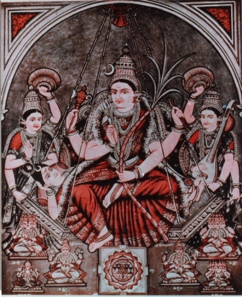

|

|
|
I am very glad to post here this compilation of 51 Shakti Peethas - actually, much of the content of this ebook was compiled more than 3 years ago, but some part of the content was missing and kept on delaying. Atlast, I have been able to source the balance info, and am publishing it online now - may be this was Her Will !!
Some years earlier, I was trying to get information on the 51 Shakti Peethas to plan a tour and found that this information was not immediately available, and I had to do quite a bit of research to find the places with its current names. Having done all that work, I decided to release the complete information, so that the larger public can get benefited by this. I have converted the whole stuff in to an e-book in PDF format for free distribution over the Internet. You will need Adobe's Acrobat Reader to read this book. Click here to download them free.
Feel free to pass on a copy of this e-book to all of your friends / relatives or send them this URL for downloading. Copyrights of this work are reserved and the contents should not be used in any manner without the author's explicit permission.
Right click here to download the E-Book now
(Select Save Target As./Save Link As.in the Shortcut Menu)
Click here to go back to the Home Page
|